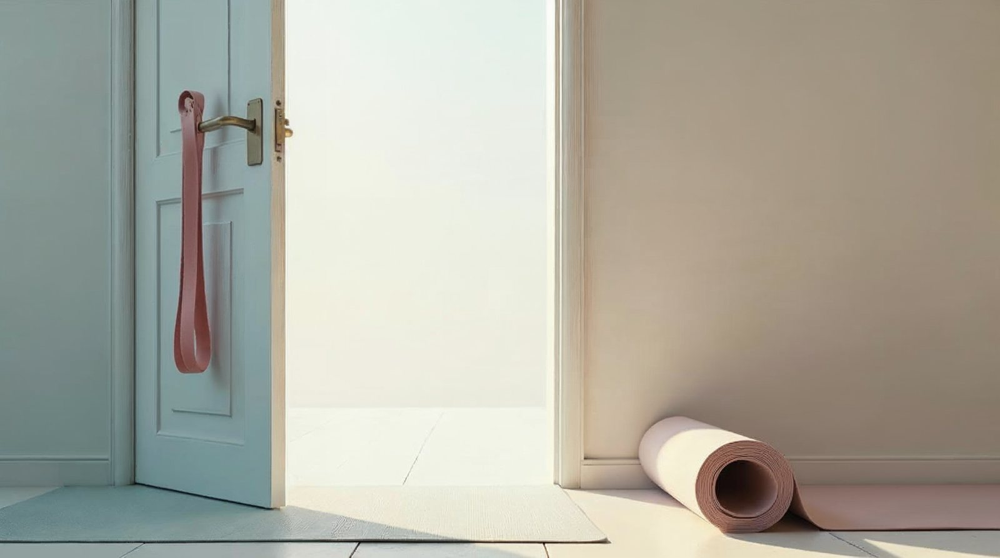
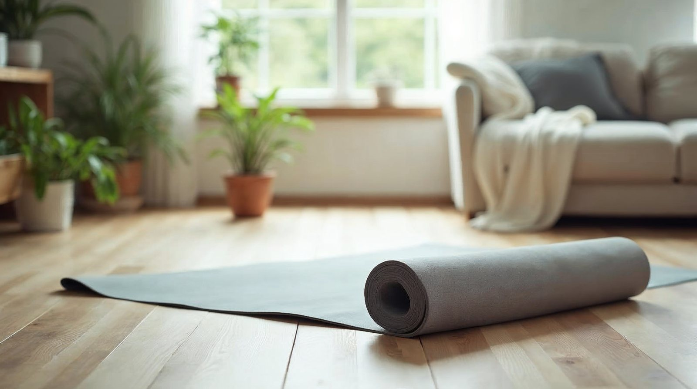
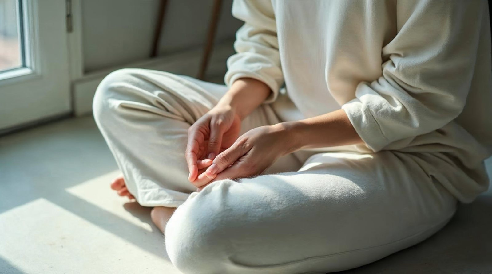
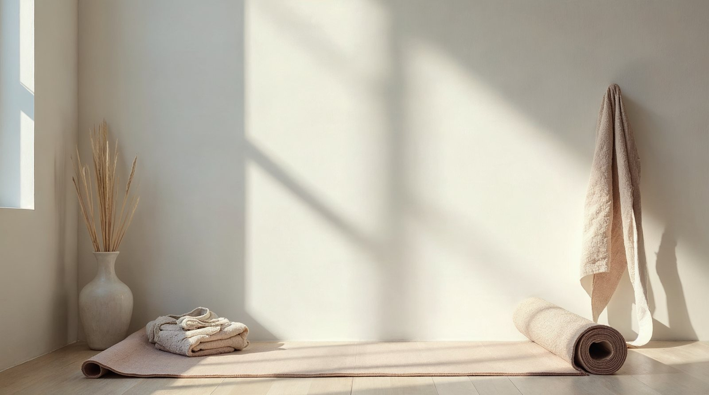

이종호 한의사 감수좋은꿈참사랑한의원 대표원장 (한의사 면허번호 19769)발행 2026-11-22 · 수정 2026-11-26
이 글의 차례
- 왜 이런 불편이 생길 수 있나요
- 거북목, 일자목, 라운드숄더는 무엇이 다른가요
- 먼저 이렇게 여쭙니다
- 집에서 해 볼 수 있는 동작
- 하루 동작을 이렇게 묶어 보세요
- 숨쉬기도 함께 살펴보세요
- 동작을 할 때 지킬 점
- 화면과 책상은 어떻게 맞추면 될까요
- 왜 하고 나면 시원하다가 다시 무거워질까요
- 상황별 예시
- 스스로 점검해 보세요
- 통증 없이 모양만 신경 쓰일 때는 어떻게 할까요
- 한의원에서 함께 살필 수 있는 경우
- 진료실에서는 어떤 움직임을 함께 보나요
- 잠자리와 휴대전화 습관도 함께 바꿔 보세요
- 이렇게 기록해 오시면 상담이 쉬워집니다
- 얼마나 지켜보고 언제 상담할까요
- 이런 증상은 먼저 확인이 필요합니다
- 관련 글
거북목과 말린 어깨에는 가슴 앞쪽을 열고 목 뒤를 길게 늘이는 동작을 하루 서너 번, 짧게 자주 하는 것이 기본입니다. 휴대전화와 컴퓨터를 오래 보면 고개가 앞으로 나가고 어깨가 말리기 쉽습니다. 어느 동작이든 아프지 않은 범위에서만 하시면 됩니다.
왜 이런 불편이 생길 수 있나요
- 고개가 앞으로 나갈수록 목 뒤 근육이 머리 무게를 더 많이 버텨야 해 뒷목과 어깨가 쉽게 뻣뻣해집니다.
- 화면을 오래 보면 어깨가 앞으로 말리고 가슴 앞쪽 근육이 짧아진 채로 굳는 경우가 많습니다.
- 등 위쪽이 굽으면 날개뼈 사이가 늘어나 당기고, 숨이 얕아지는 느낌이 들기도 합니다.
- 베개 높이나 엎드려 휴대전화를 보는 습관이 밤사이 긴장을 이어 가게 하기도 합니다.
- 추운 날 어깨를 움츠리고 다니면 목과 어깨 위쪽의 긴장이 더해지기도 합니다.
거북목, 일자목, 라운드숄더는 무엇이 다른가요
세 가지는 자주 함께 쓰이지만 가리키는 자리가 조금씩 다릅니다. 거북목은 옆에서 봤을 때 머리가 어깨보다 앞으로 나와 있는 자세를 말합니다. 일자목은 목뼈가 원래 가진 완만한 곡선이 줄어든 상태를 가리키는 말로, 엑스레이 같은 영상에서 확인하는 모양입니다.
라운드숄더는 어깨가 앞으로 말려 들어가 가슴이 좁아지고 날개뼈가 벌어진 자세입니다. 셋은 서로 맞물려 생기는 경우가 많아, 저는 목만 당기기보다 가슴과 등, 날개뼈를 함께 움직이는 동작을 권합니다.
겉모습이 비슷해도 불편한 자리는 사람마다 다릅니다. 뒷목이 무거운 분, 날개뼈 사이가 타는 듯한 분, 관자놀이 쪽이 조이는 분이 각기 있어, 어디가 가장 힘든지부터 여쭙는 것입니다. 같은 거북목이라도 힘든 자리가 다르면 먼저 해 볼 동작과 화면을 바꾸는 순서도 달라집니다.
먼저 이렇게 여쭙니다
- 목, 어깨, 날개뼈 사이 중 어디가 가장 뻐근한가요?
- 하루에 화면을 보는 시간이 얼마나 되나요?
- 팔이나 손이 저린 적이 있나요?
- 두통이나 눈의 피로가 함께 있나요?
- 어느 시간대에 더 힘든가요?
- 잘 때 베개 높이는 어떤가요, 엎드려 휴대전화를 보나요?

집에서 해 볼 수 있는 동작
- 가슴 열기: 양손을 뒤로 깍지 끼고 가슴을 펴며 15초 유지
- 턱 당기기: 턱을 살짝 당겨 목 뒤를 길게 하고 5초 유지
- 문틀 스트레칭: 팔을 문틀에 대고 몸을 앞으로 기울여 20초 유지
- 어깨 으쓱했다 내리기: 어깨를 올렸다가 힘을 빼며 내리기 10회
- 날개뼈 모으기: 어깨를 뒤로 모아 5초 유지
- 45~50분마다 일어나 자세 바꾸기
- 모든 동작은 통증 없는 범위에서 천천히, 숨을 참지 말고 하기
- 휴대전화는 눈높이 가까이 들고 보고, 노트북은 받침대로 화면을 올리기
하루 동작을 이렇게 묶어 보세요
동작을 다 외우기보다 하루의 장면에 붙여 두면 잊지 않고 하기 쉽습니다.
- 아침: 세수하기 전 어깨 으쓱했다 내리기 10회, 턱 당기기 5회로 밤새 굳은 목을 깨웁니다.
- 일하는 중: 회의나 강의 한 편이 끝날 때마다 문틀 스트레칭 한 번, 날개뼈 모으기 5회를 합니다.
- 점심 뒤: 밖에 나가 5분쯤 걸으며 팔을 뒤로 크게 흔들어 가슴을 엽니다.
- 저녁: 샤워로 몸이 데워진 뒤 가슴 열기를 천천히 두세 번 합니다.
- 잠들기 전: 휴대전화를 내려놓고 바로 누워 숨을 몇 번 길게 쉬며 어깨 힘을 뺍니다.
처음 일주일은 다섯 장면을 다 채우려 하기보다 두 장면만 골라 꾸준히 해 보세요. 몸에 익으면 하나씩 늘리면 됩니다.
숨쉬기도 함께 살펴보세요
어깨가 말리고 등이 굽으면 가슴이 좁아져, 숨을 배보다 어깨와 목으로 쉬는 습관이 생기기 쉽습니다. 숨을 들이쉴 때마다 어깨가 함께 올라간다면 목 앞과 옆의 근육이 하루 종일 쉬지 못하고 있을 수 있습니다.
한 손은 가슴, 한 손은 배에 올리고 코로 천천히 들이쉬며 배 쪽 손이 먼저 오르는지 느껴 보세요. 가슴 열기를 한 뒤 이렇게 서너 번 숨을 고르면 동작의 느낌이 몸에 오래 남는다는 분이 많습니다.
숨쉬기는 따로 시간을 내지 않아도 됩니다. 신호를 기다릴 때, 화면이 넘어가길 기다릴 때처럼 하루의 짧은 틈에 두세 번씩 끼워 넣으면 충분합니다.

동작을 할 때 지킬 점
- 반동을 주지 말고 천천히 들어갔다 천천히 돌아옵니다.
- 당기는 느낌까지는 괜찮지만, 찌릿하거나 팔로 저림이 내려가면 그 동작은 바로 멈춥니다.
- 아침에 일어나 목이 굳어 있을 때는 범위를 작게 시작하고, 몸이 데워진 뒤 조금씩 넓힙니다.
- 한 번에 오래 하기보다 하루 서너 번 나누어 하는 편이 몸에 익히기 쉽습니다.
- 동작을 한 뒤 오히려 뻐근함이 한나절 넘게 남으면, 다음에는 유지 시간과 범위를 줄여 봅니다.
- 턱 당기기는 고개를 숙이는 동작이 아니라, 뒤통수를 뒤로 살짝 밀어 목 뒤를 길게 하는 동작입니다. 거울로 옆모습을 보며 해 보면 익히기 쉽습니다.
- 문틀 스트레칭은 팔 높이를 어깨보다 조금 낮게 두고 시작하고, 어깨 앞이 찌릿하면 팔을 더 내리거나 몸을 덜 기울입니다.
- 날개뼈를 모을 때 어깨가 귀 쪽으로 올라가지 않도록, 어깨를 아래로 내린 채 뒤로 모읍니다.
화면과 책상은 어떻게 맞추면 될까요
- 모니터 위쪽 끝이 눈높이와 비슷하거나 조금 아래에 오게 하고, 팔을 뻗으면 손끝이 화면에 닿을 정도로 거리를 둡니다.
- 노트북만 쓰면 화면이 낮아 고개가 숙여지기 쉬워, 받침대로 화면을 올리고 키보드를 따로 쓰는 방법이 있습니다.
- 의자에 엉덩이를 깊숙이 넣어 앉고 등받이에 등을 기대면 고개가 앞으로 나가는 것을 덜 수 있습니다.
- 팔꿈치는 몸 옆에 편하게 두고, 키보드가 너무 멀어 어깨가 앞으로 끌려 나가지 않게 합니다.
- 휴대전화는 한 손으로 들고 내려다보기보다 팔꿈치를 몸에 붙이고 화면을 얼굴 쪽으로 올려 봅니다.
- 모니터가 두 대라면 자주 보는 화면을 정면에 두어 고개를 한쪽으로 돌린 채 오래 있지 않게 합니다.
책상을 바꾸고 나서 처음 며칠은 오히려 어색할 수 있습니다. 몸이 익숙한 자세로 돌아가려는 것이라, 일주일쯤 지켜보며 뻐근함이 어떻게 달라지는지 적어 보세요.
왜 하고 나면 시원하다가 다시 무거워질까요
스트레칭을 하고 나면 한동안 시원하다가 오후면 다시 무거워진다는 분이 많습니다. 하루 중 화면 앞에 있는 시간은 몇 시간이고 스트레칭은 몇 분이니, 몸이 오래 머문 자세 쪽으로 돌아가는 것은 자연스러운 일입니다.
그래서 저는 동작을 세게 하기보다 자주 끊어 주는 쪽을 권합니다. 같은 자세로 머무는 시간을 줄이고, 화면 높이처럼 매일 반복되는 환경을 바꾸는 것이 스트레칭 한 번보다 오래 남습니다. 한 번 할 때 깊게 늘이려고 애쓰면 오히려 근육이 버티려고 더 긴장하기도 합니다.
상황별 예시
- 예를 들어 하루 종일 모니터를 보는 사무직 직장인이라면, 45~50분마다 일어나 문틀 스트레칭과 가슴 열기를 한 번씩 하고, 모니터 위쪽이 눈높이에 오도록 받침대로 올려 봅니다.
- 예를 들어 인강을 들으며 고개를 숙이고 문제를 푸는 수험생이라면, 독서대로 책을 세우고 강의가 한 편 끝날 때마다 턱 당기기와 날개뼈 모으기를 해 봅니다.
- 예를 들어 아기를 안고 수유하느라 어깨가 앞으로 말리는 부모라면, 수유 쿠션으로 아기 높이를 올려 고개 숙이는 시간을 줄이고, 아기가 잠든 사이 가슴 열기를 짧게 해 봅니다.
- 예를 들어 퇴근길 지하철에서 내내 고개를 숙이고 휴대전화를 보는 경우라면, 한 정거장마다 화면에서 눈을 떼고 턱을 살짝 당겨 보고, 서 있을 때는 손잡이를 잡은 팔을 바꿔 가며 어깨를 쉬게 합니다.
- 예를 들어 운전을 오래 하는 일이라면, 등받이를 너무 눕히지 말고 머리 받침에 뒤통수가 가까이 오게 맞춘 뒤, 신호를 기다릴 때마다 어깨 으쓱했다 내리기를 몇 번 해 봅니다.

스스로 점검해 보세요
- 벽에 등을 대고 섰을 때 뒤통수와 어깨가 함께 닿지 않나요?
- 옆에서 찍은 사진에서 귀가 어깨보다 앞쪽에 있나요?
- 오후가 될수록 뒷목과 어깨가 무거워지나요?
- 한 번 화면 앞에 앉으면 한 시간 넘게 일어나지 않는 날이 많나요?
- 오래 앉아 있으면 날개뼈 사이가 타는 듯 뻐근한가요?
- 숨을 들이쉴 때 어깨가 함께 올라가나요?
- 고개를 좌우로 돌릴 때 한쪽이 덜 돌아가나요?
두세 가지가 겹친다면 동작과 함께 화면 높이와 앉는 시간을 먼저 바꿔 보세요. 몇 주 뒤 같은 질문에 다시 답해 보면 달라진 점을 알아보기 쉽습니다.
통증 없이 모양만 신경 쓰일 때는 어떻게 할까요
아프지는 않은데 사진 속 고개 모양이나 말린 어깨가 마음에 걸려 물어보시는 분도 많습니다. 이런 경우에는 서두르기보다 화면 높이와 쉬는 간격, 하루 두세 장면의 동작부터 시작해 보시길 권합니다.
옆모습 사진을 같은 조건으로 한 달 간격으로 찍어 두면 변화를 비교하기 쉽습니다. 모양이 바로 달라지지 않더라도 오후의 무거움이나 눈의 피로가 덜해졌다면 몸은 이미 바뀌고 있는 중일 수 있습니다.
한의원에서 함께 살필 수 있는 경우
- 스마트폰을 오래 보면 목과 어깨가 뭉치는 경우 목과 어깨의 긴장을 함께 살핍니다.
- 어깨가 앞으로 말리는 느낌이 드는 경우 자세를 함께 살핍니다.
- 뒷목이 뻐근해 두통이 오는 경우 근육의 긴장을 함께 살핍니다.
좋은꿈참사랑한의원에서는 첫 방문 때 어떤 동작에서, 언제부터 불편한지를 먼저 충분히 듣습니다. 이어서 모든 분께 맥을 짚고, 필요하다고 판단될 때 혀와 배를 살핍니다. 서 있는 모습과 목·어깨의 움직임, 팔 저림·감각·근력을 확인하고, 필요하면 초음파로 근육과 힘줄을 봅니다.
그다음 침·약침·추나 가운데 지금 맞는 방법을 정하고 그 이유를 설명해 드립니다. 귀가 전에는 집에서 해 볼 동작과 다음에 확인할 일을 알려 드리고, 다음에 오시면 지난 이야기를 이어서 여쭙습니다.
진료실에서는 어떤 움직임을 함께 보나요
목이 아파 오셨어도 고개를 숙이고 젖히고 돌리는 움직임만 보지 않습니다. 팔을 머리 위로 올릴 때 날개뼈가 함께 잘 돌아가는지, 등 위쪽이 펴지는지, 숨을 쉴 때 갈비뼈가 얼마나 움직이는지도 이어서 봅니다.
이렇게 보는 이유는 목이 대신 일을 떠맡고 있는 경우가 많아서입니다. 등이 굳어 잘 펴지지 않으면 고개를 들 때 목만 꺾이고, 날개뼈가 잘 돌지 않으면 팔을 쓸 때마다 목 옆 근육이 끌려 올라갑니다.
그래서 집에서 할 동작도 사람마다 조금씩 다르게 고릅니다. 등이 굳은 분께는 가슴 열기를, 날개뼈 쪽이 약한 분께는 날개뼈 모으기를 먼저 권하는 식입니다. 진료 때 한 번 함께 해 보며 강도와 횟수를 맞춰 드립니다.
잠자리와 휴대전화 습관도 함께 바꿔 보세요
- 엎드려 휴대전화를 보면 고개를 든 채 오래 버티게 되어, 잠들기 전 목의 긴장이 밤새 이어지기 쉽습니다.
- 누워서 화면을 볼 때는 베개로 머리를 너무 높이 받치지 말고, 화면을 눈 위로 들어 짧게 봅니다.
- 옆으로 자는 분은 어깨 너비만큼 베개가 받쳐 주어야 목이 아래로 꺾이지 않습니다.
- 잠들기 30분 전에는 화면을 내려놓고, 어깨를 으쓱했다 내리며 하루의 긴장을 풀어 줍니다.

이렇게 기록해 오시면 상담이 쉬워집니다
- 하루 화면을 보는 시간(휴대전화의 사용 시간 기록을 활용)
- 뻐근함이 가장 심한 시간대와 부위
- 팔이나 손 저림이 있다면 어느 손가락 쪽인지
- 해 본 스트레칭과 그 뒤의 느낌
- 일하거나 공부하는 책상과 의자 사진
- 두통이 있다면 위치와 빈도
- 하루에 동작을 몇 장면에서 했는지, 빠뜨린 날은 왜 빠뜨렸는지
- 옆에서 찍은 선 자세 사진(같은 조건으로 몇 주 간격)
얼마나 지켜보고 언제 상담할까요
- 화면 높이와 쉬는 간격을 바꾸고 스트레칭을 이어 가며, 2~4주 동안 뻐근함이 어떻게 달라지는지 기록합니다.
- 2~4주가 지나도 뻐근함이 그대로이거나, 두통이 잦아지고 잠을 설치는 날이 늘면 상담을 받아 보세요.
- 스트레칭을 할 때마다 통증이 커지거나 한쪽만 유독 아프다면, 혼자 계속하기보다 진료에서 자세와 움직임을 확인해 보세요.
- 팔이나 손으로 저림이 내려가거나 힘이 빠지면 지켜보지 말고 바로 진료를 받습니다.
이런 증상은 먼저 확인이 필요합니다
- 팔이나 손이 저리거나 힘이 빠지는 경우
- 동작을 하면 통증이 심해지는 경우
이런 신호가 있으면 한의원보다 가까운 병원이나 응급실을 먼저 찾으세요.
관련 글

여쭙는 것
- 목, 어깨, 날개뼈 사이 중 어디가 가장 뻐근한가요?
- 하루에 화면을 보는 시간이 얼마나 되나요?
- 팔이나 손이 저린 적이 있나요?
한의원에서 함께 살필 것
- 스마트폰을 오래 보면 목과 어깨가 뭉치는 경우 목과 어깨의 긴장을 함께 살핍니다.
- 어깨가 앞으로 말리는 느낌이 드는 경우 자세를 함께 살핍니다.
- 뒷목이 뻐근해 두통이 오는 경우 근육의 긴장을 함께 살핍니다.
먼저 확인이 필요한 신호
- 팔이나 손이 저리거나 힘이 빠지는 경우
- 동작을 하면 통증이 심해지는 경우
한눈에 보는 표
| 구분 | 핵심 |
|---|---|
| 여쭙는 것 | 목, 어깨, 날개뼈 사이 중 어디가 가장 뻐근한가요? 하루에 화면을 보는 시간이 얼마나 되나요? |
| 한의원에서 함께 살필 것 | 스마트폰을 오래 보면 목과 어깨가 뭉치는 경우 목과 어깨의 긴장을 함께 살핍니다. 어깨가 앞으로 말리는 느낌이 드는 경우 자세를 함께 살핍니다. |
| 먼저 확인이 필요한 신호 | 팔이나 손이 저리거나 힘이 빠지는 경우 동작을 하면 통증이 심해지는 경우 |
자주 묻는 질문
하루에 몇 번 해야 하나요?
무리 없이 하루 서너 번, 한 동작당 짧게 하는 것을 권하는 경우가 많습니다.
하다가 아프면 어떻게 하나요?
통증이 생기면 멈추고 범위를 줄이며, 계속되면 상담을 권합니다.
한의원에서는 무엇을 하나요?
자세와 움직임을 살피고 필요한 방법을 상의합니다.
자세 교정 밴드를 차면 도움이 되나요?
잠깐 자세를 의식하는 데 쓸 수는 있지만, 오래 기대기보다 자주 일어나 자세를 바꾸고 스트레칭을 하는 쪽을 권합니다.
베개는 어떤 높이가 좋은가요?
누웠을 때 목이 앞으로 꺾이거나 뒤로 젖혀지지 않는 높이가 편한 경우가 많습니다. 베개만으로 자세가 정해지기보다 낮 동안의 자세가 더 큰 몫을 해, 화면 높이와 쉬는 간격도 함께 바꿔 보세요.
스트레칭만 하면 거북목이 펴지나요?
스트레칭은 굳은 근육을 풀고 자세를 의식하는 데 쓸 수 있지만, 하루 대부분의 자세가 그대로면 다시 돌아가기 쉽습니다. 그래서 스트레칭은 자세 습관을 바꾸는 일과 함께 가야 한다고 말씀드립니다.
좋은꿈참사랑한의원은 재진 때 지난번 이야기부터 이어서 여쭙니다. 진료시간과 예약은 오시는 길에서 확인하세요.
어디서 상담받을 수 있나요?
좋은꿈참사랑한의원은 서울 동작구 만양로2길 2 신성빌딩 3층·5층(서울 동작구 상도동, 7호선 상도역 3번 출구 근처)에 있습니다. 한의사 3명(이종호 대표원장, 조영기 수석진료원장, 정원영 진료원장)이 진료합니다. 진료시간은 평일 09:30~20:00(점심 13:00~14:00), 토·일·공휴일 09:30~15:00이며, 방문 전 전화로 확인을 권합니다. 예약은 네이버 예약, 카카오톡 상담, 전화 02-815-7510로 받습니다.
이 글은 일반적인 건강 정보이며 개인의 진단이나 치료를 대신하지 않습니다. 증상이 있거나 복용 중인 약이 있다면 진료를 통해 확인하세요. 치료 효과는 개인마다 다를 수 있습니다.
작성 기준: 일반적으로 알려져 있는 건강 정보를 참고해 정리했습니다(대표원장 감수). 증상 기록은 1~2주 동안 하루 1회, 비슷한 시간에 적어 오시면 지난 상태와 비교하기 쉽습니다.